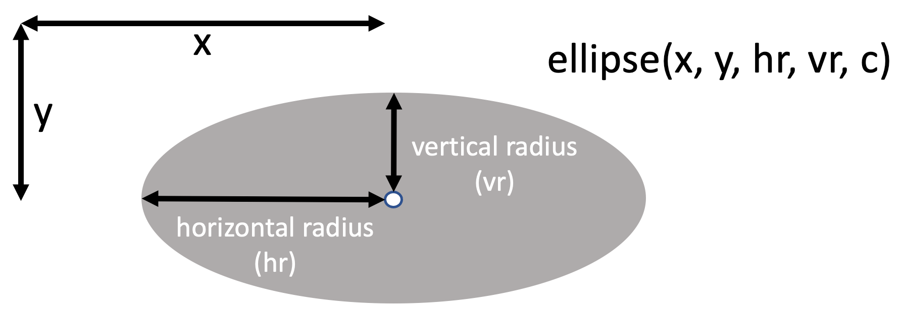
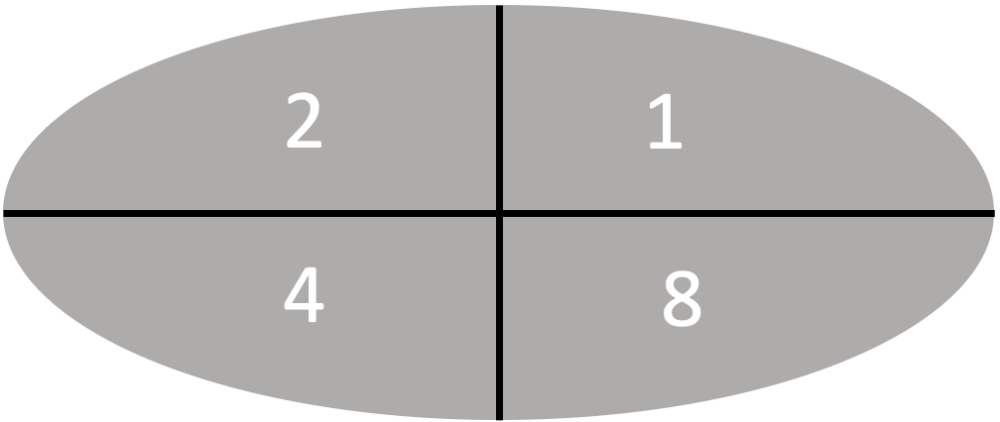

Drawing Ellipses
Since version 1.19.1-724 of the MicroPython runtime was released in February 2023 we have support for the framebuf Ellipse function. This function allows us to draw circles and ellipses that are both filled and un-filled.
We can also draw into one or more quadrants so we can do 1/4, 1/2, or 3/4 filled ellipses.
Sample Program Code
1 2 3 4 5 6 7 8 9 10 11 12 13 14 15 16 17 18 19 20 21 22 23 24 25 26 27 28 29 30 31 | |
Ellipse Parameters

display.ellipse(x, y, HORZ_RADIUS, VERT_RADIUS, COLOR, FILL_FLAG, QUAD_CODE)
Draw an ellipse at the given location. Radii HORZ_RADIUS and VERT_RADIUS define the geometry.
If HORZ_RADIUS equal the VERT_RADIUS a circle is drawn. The COLOR parameter defines the color. 0 for OFF and 1 for ON.
The optional FILL_FLAG parameter can be set to True to fill the ellipse. Otherwise, just a single pixel outline is drawn.
Quadrant Fill Codes

The optional QUAD_CODE parameter enables drawing to be restricted to certain quadrants of the ellipse.
You can add the following numbers to figure out the quadrant code:
- 1 - upper right
- 2 - upper left
- 4 - lower left
- 8 - lower right
For example for the lower half of the ellipse on you add 4 + 8 = 12.
Here is a complete list of the 16 possible values of the code:
| Code | Description |
|---|---|
| 0 | all off |
| 1 | upper right on |
| 2 | upper left on |
| 3 | top half on |
| 4 | lower left on |
| 5 | lower left and upper right on |
| 6 | left side on |
| 7 | lower right off |
| 9 | right side on |
| 10 | upper left and lower right are on |
| 11 | all but lower left are on |
| 12 | lower half on |
| 13 | all but upper left are on |
| 14 | all but upper right are on |
| 15 | all four quadrants are drawn |